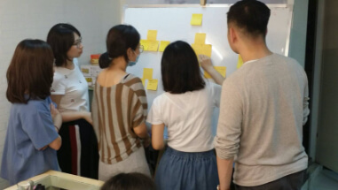
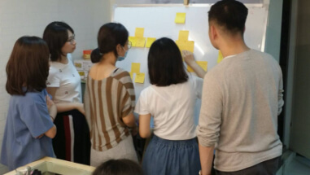

About Me
Hi,I’m Peggy Chiang,產品設計師，自2008年以來，我參與了許多有關Web /視覺設計/UI
介面設計多個項目，近2年專注在UI/UX設計邏輯，資料應用，發掘問題本質，協作解決問題，探索精簡設計和有意義的用戶體驗。
跨領域，保持好奇心，觀察，探索與冒險持續我的設計熱情
我做了哪些專案項目－
- 產品設計
- 用戶體驗
- 網頁設計與響應式設計
- 設計樣式指南和樣式庫
- 用戶研究
- 前端開發
團隊合作－
- 該如何溝通?
- 如何站在使用者的角度想?
- 如何滿足客戶的需求?
- 如何在有限的時間內做到最好?達到你我共同的目標。
- 如何達到視覺性的品牌行銷?
- 如何在團隊合作中達到良好的效率?
- 如何藉由UX協助商業策略?
- 如何做個解決問題的設計?
工作之餘－
除了我的工作生涯，也積極參與工作之外的相關活動A4設計工作訪，UX讀書會，閱讀相關文章，參與使用者設計相關分享會，UX線上課程，講座...等
認識幾個在業界志同道合的同學一起參加「2020資料創新應用競賽」，藉由競賽過程中了解 opendata
怎麼應用在產品設計上。
喜歡自我探索，早期接觸網頁設計是喜歡網頁上的「互動」再到UI/UX，產品設計，現在喜歡的設計「互動」是與人，都是「互動」卻是完全不同的結果，在驗證的過程中顛覆你的想像。

 

-
資深產品介面UI/UX設計師
翱騰國際科技股份有限公司 | 2019.5-2020.6
- 與利害關係人和各部門進行專案討論，UX訪談,關於市場方向和解決方案。
- 和PM討論並協助UX功能線框稿繪製wireframe,確認要開發的功能。
- 協助公司 B2B 產品功能開發,前台＋後台UI/UX ,設計交互設計過程和原理以及相關UI guideline，測試。
- 協助工程師 HTML_RWD (響應式網頁)製作，CSS/SCSS / JQuery / 套件應用。
- 專案和內部產品迭代修正。
-
UI/UX Designer
softall 索夫特科技有限公司 | 2018.7-2018.12
- 設計公司形象之視覺相關平面文宣、公司內部企業網站。
- 公司產品開發前台＋後台UI/UX 設計以及相關UI guideline。
- 設定UX功能線框稿繪製wireframe。
- 與各部門討論，產品經理PM和工程師RD以及市場溝通方向，達到目前共識的解決方案。
-
網頁設計師／前端設計
芯禾數位行銷 | 2015.5-2018.5
- 活動網站 / 企業網站設計 / banner 視覺設計
- HTML_RWD / 網頁SEO (結構化資料設定) 以及追蹤
- 手機、平板ui/ux設計
-
UI+UX / 網頁視覺設計師
易繁科技 | 2013.11-2015.3- 企業網站設計
- 手機、平板ui / ux設計
- HTML_RWD + CSS
-
網頁設計師
乙曼資訊 | 2011.11-2013.10- 3D MAX材質貼圖、更新影片轉檔輸出
- 公司形象視覺、內部企業網站
- 購物網站 / 手機版UI網頁製作
-

工作經歷